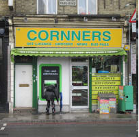

Conners is a Convenience store!
Cornners Food & Wine is a convenience store that is also licensed to sell alcohol. They also sell newspapers, magazines, snacks, soft drinks and National Lottery tickets. A pay point for utility bills is available.
Grocers and Convenience Store
Cornners Food & Wine is a convenience store that is also licensed to sell alcohol. They also sell newspapers, magazines, snacks, soft drinks and National Lottery tickets. A pay point for utility bills is available.
Check out the shop here...Opening hours
Monday 07:00 - 23:00
Tuesday 07:00 - 23:00
Wednesday 07:00 - 23:00
Thursday 07:00 - 23:00
Friday 07:00 - 23:00
Saturday 07:00 - 23:00
Sunday 07:00 - 22:30